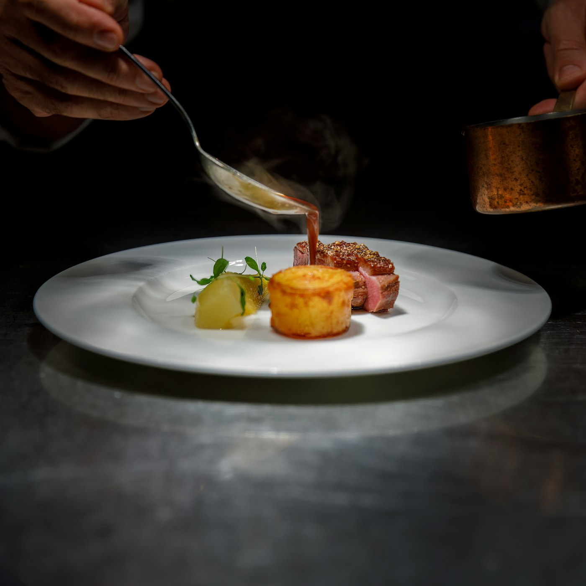
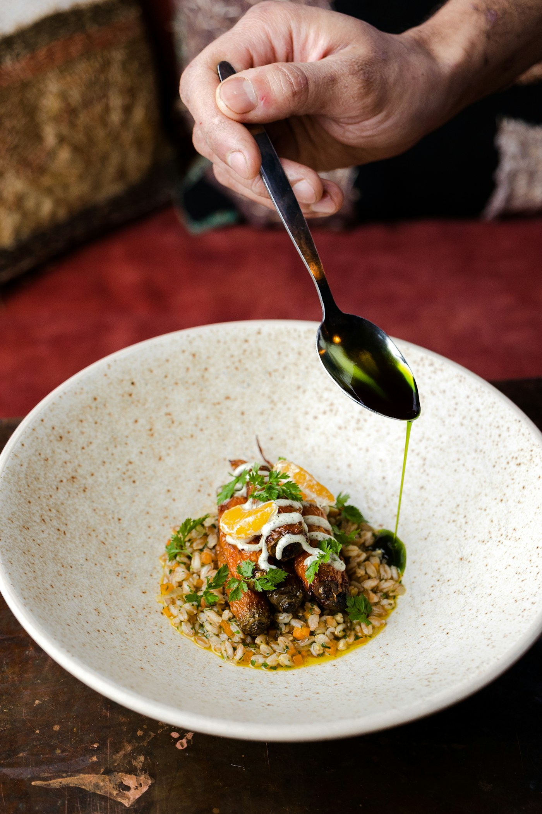

Beautiful cooking without the theatre. Every plate felt thoughtful, and the team made the whole evening easy.
— Maya R. · local diner
 York · England
York · EnglandSeason-led plates, warm hospitality, and ingredients from people we know. Come for lunch, stay for another glass.
We cook with the rhythm of the seasons, sourcing from nearby farms, growers, and makers. The menu changes often; the welcome never does.

Natural ingredients, thoughtful cooking, and a room made for long lunches.

Beautiful cooking without the theatre. Every plate felt thoughtful, and the team made the whole evening easy.
— Maya R. · local diner
Wednesday–Thursday12:00–22:00
Friday–Saturday12:00–23:00
Sunday12:00–17:00